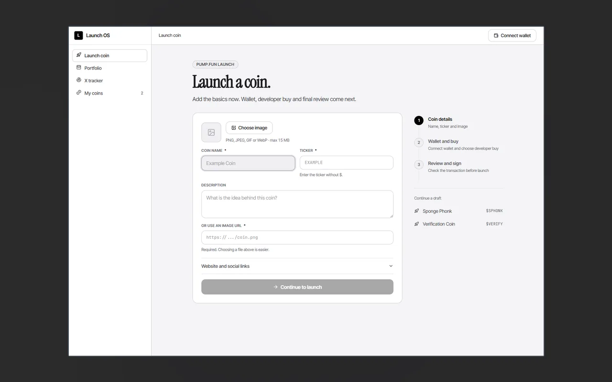
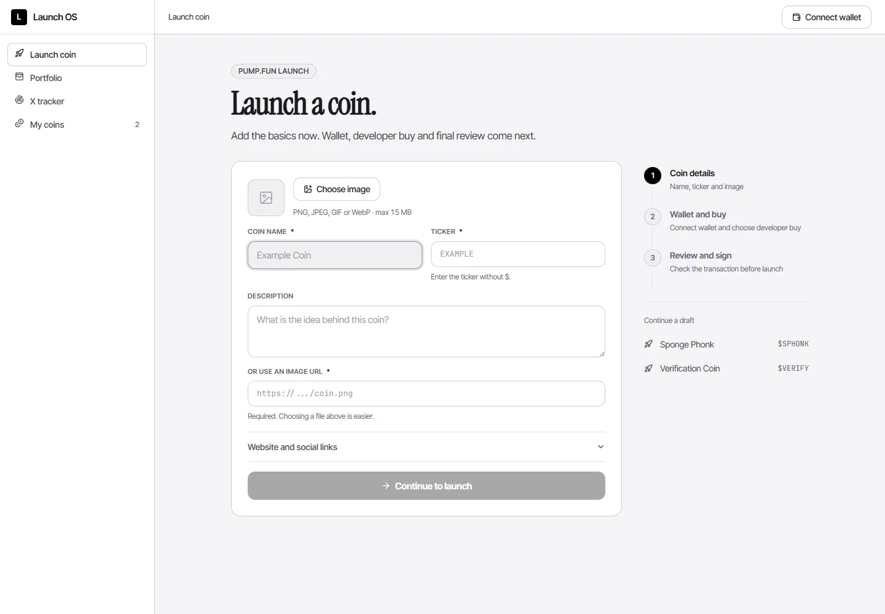
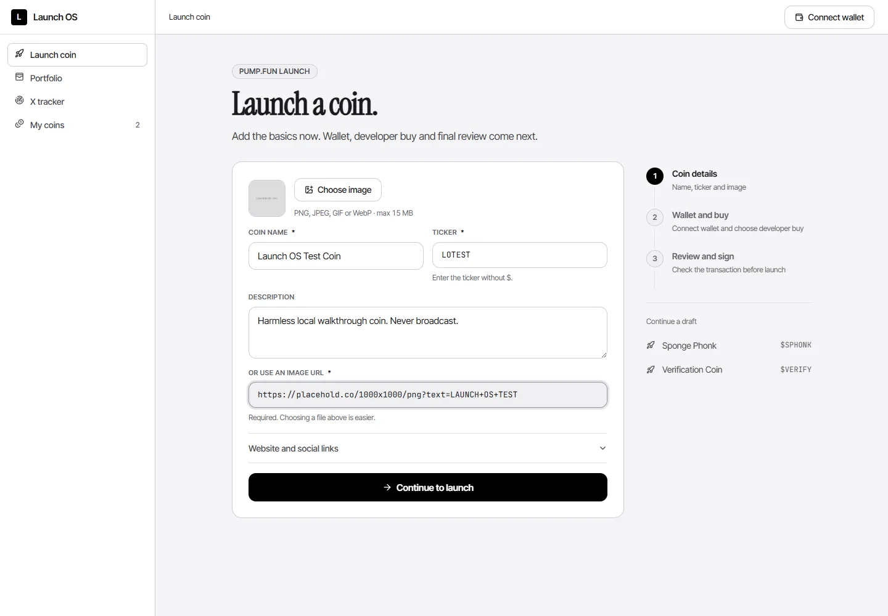

TRADING SOFTWARE
Memecoin Launch
One workspace for token-launch preparation.
ORIGINAL PROJECT MATERIAL

Actual token-launch frontend captureNOT A GENERATED UI MOCKUP
01 / Overview
What is Memecoin Launch?
Memecoin Launch is a workspace for preparing and inspecting Solana token-launch steps across supported launchpad adapters.
A non-custodial Solana control center for metadata, readiness checks, wallet roles and transaction building.
02 / Inside the project
What it actually does.
- Manage launch projects and token metadata.
- Build unsigned or partially signed launch-related transactions.
- Inspect readiness, public analytics, and supported launchpad adapters.
- Review wallet roles and launch status.
How it works
The web frontend manages projects, token metadata, wallet roles and readiness checks. A separate backend builds unsigned or partly signed launch-related transactions and exposes analytics and event information. Signing and submission remain outside a simple read-only view, and a local UI does not prove a launch occurred.
03 / Real material
Watch it. Inspect it.
Archived frontend screenshots show the project setup, coin details, and launch-overview screens.




Scope note. Both frontend and backend are cataloged together; this does not imply completed live token launches.